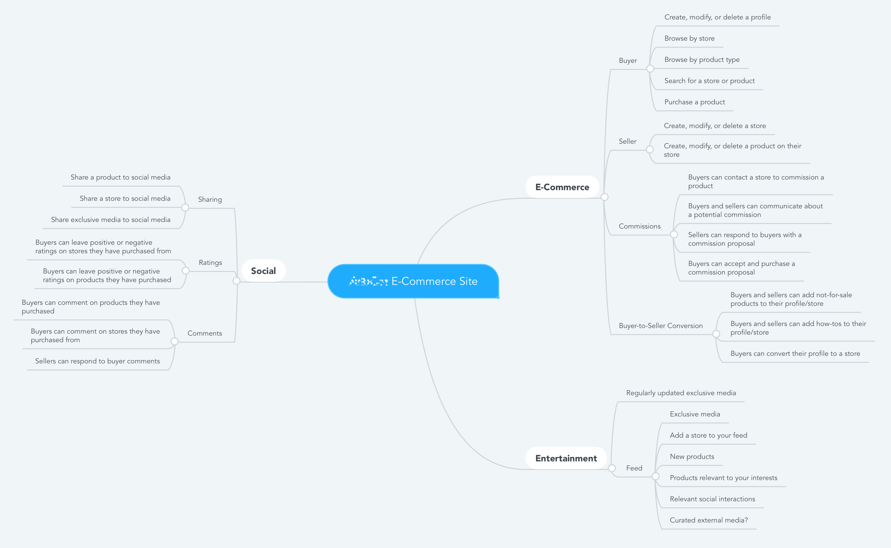

Niche E-Commerce App
Summary
I am consulting for an acquaintance in the planning stages of an e-commerce project.
Initial Guidance
A nontechnical acquaintance is considering launching multivendor marketplace app targeting an underserved group of buyers and sellers. He approached me for a consultation on how to proceed.
After a discussion about his proposed app, the target demographic, the competitive landscape, and his desired launch date, I recommended trying to define the feature set of the minimum viable product. I created a mind map with necessary and potential features for his app and shared it with him as a first step toward defining the minimum viable product.
Platforms & Technologies
The client asked me to research what technologies might be appropriate for the project and what qualifications and skills a cofounder might need to have. I surveyed platforms and technologies that could play a role in a multivendor marketplace app and classified what I found into four categories, ranging from hosted, template-based services to entirely custom products built from existing database, payment processing, and shipping solutions.
We discussed the benefits and drawbacks of varying levels of customization and agreed to focus on established services with moderate levels of customization and extensibility. I am currently preparing a brief on Shopify with a popular marketplace add-on as a possible basis for the project.